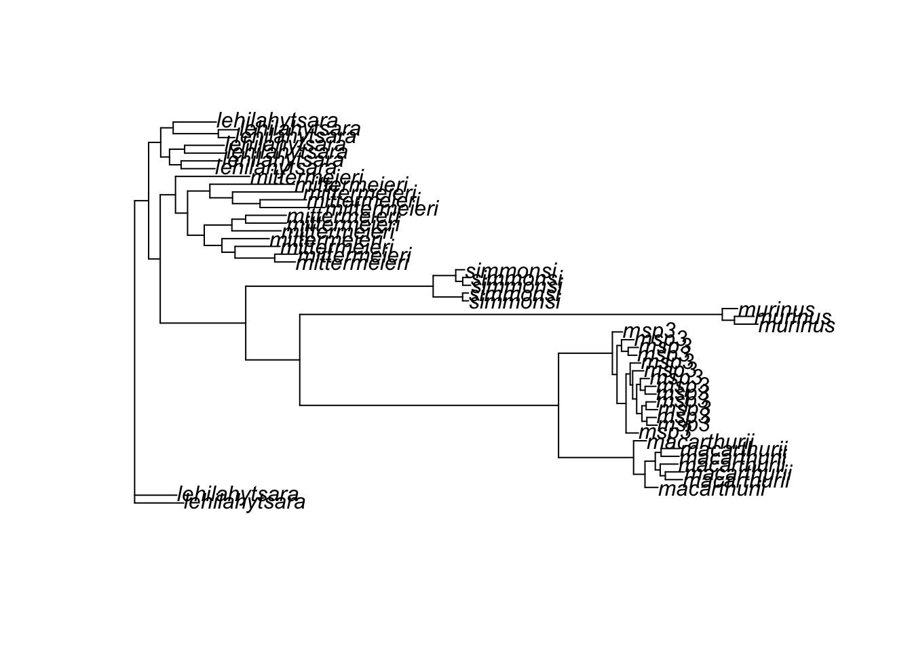
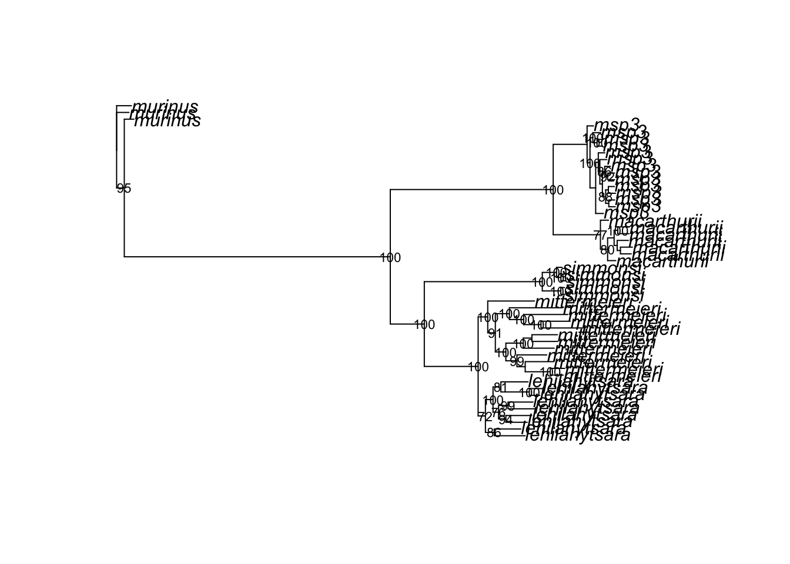

# install.packages("ape")
library(ape)
library(readr)Phylogenetic Inference with IQTREE
The final lab of the semester will provide a brief introduction to estimating phylogenies with SNP data. We will infer relationships among five Microcebus spp. using data from Poelstra et al. 2021. Unlike Poelstra et al., however, we will avoid species tree inference in favor of a concatenation-based method of phylogenetic inference implemented in IQTREE. This approach takes SNP data from a .vcf file, converts genotypes (e.g., 0/0, 0/1, 1/1) into sequence characters (using standard bases for homozygotes and ambiguity codes like R for heterozygotes), concatenates all sites into a single alignment, and then uses a model of sequence evolution—along with an efficient pruning algorithm to evaluate likelihood—to search for the tree that maximizes the probability of observing these data. (While a diversity of pruning algorithms have been developed, they typically work by taking an initial tree and iteratively modifying its topology and branch lengths, only keeping changes that increase likelihood until no further improvement is found.) The documentation for IQTREE is unusually clear, and worth your time.
We begin by creating a new mamba environment for IQTREE and its dependencies:
name: iqtree
channels:
- conda-forge
- bioconda
dependencies:
- python=3.10
- iqtree
- bcftools
- tabix
- gitmamba env create -f iqtree.yamlWe will also need a handy utility called vcf2phylip for converting .vcf files into a format called PHYLIP, developed for [a program of the same name] by Joe Felsenstein (my graduate school phylogenetics professor). These plain-text files begin with a line indicating the number of samples (here, 50) and sites (35529) in the sequence alignment. Each row begins with the name of a sample, is followed by a tab space, and then concludes with all sequences in a single row, with missing data represented by the character N:
50 35529
mleh019_r01_p1h12 GRGCCYCGAGAGC.....
mleh020_r01_p2c06 GGGCCTCGAGAGC.....We can download vcf2phylip directly from GitHub using the command git clone (note that this will create a subdirectory of the same name wherever it is executed):
git clone https://github.com/edgardomortiz/vcf2phylip.gitWe now need an .sbatch script that performs multiple tasks: 1) load the mamba environment with IQTREE and bcftools; 2) use bcftools to filter the .vcf down to SNPs only and index it; 3) convert this filtered .vcf to a .phy file with vcf2phylip.py; and 4) run IQTREE on this output:
#SBATCH --account=priority-bioe-591-genomics
#SBATCH --job-name=iqtree
#SBATCH --partition=priority
#SBATCH --nodes=1
#SBATCH --ntasks-per-node=1
#SBATCH --cpus-per-task=1
#SBATCH --time=0-01:00:00
#SBATCH --output=iqtree-%j.out
#SBATCH --error=iqtree-%j.err
module load Mamba/23.11.0-0 # load mamba module
eval "$(conda shell.bash hook)" # make conda / mamba executable
conda activate iqtree # load iqtree environment
bcftools view -v snps lemurs.vcf.gz -Oz -o lemurs.snps.vcf.gz # filter vcf to SNPs
bcftools index lemurs.snps.vcf.gz # index the vcf
python vcf2phylip/vcf2phylip.py -i lemurs.snps.vcf.gz # convert the vcf to phylip
iqtree -s lemurs.snps.min4.phy -m GTR -bb 500 -nt AUTO # run iqtreeIn the script above, the first three lines of commands should be annoyingly familiar. The next two lines (bcftools view and bcftools index) are variants of commands you used earlier this semester. Running vcf2philip (on line 6) requires only specifying a path to a .vcf file with the -i argument; note in this example below that I am submitting the job from outside the vcf2phylip subdirectory. The final line (beginning with iqtree) takes the input file from vcf2phylip with the -s flag; by default, the program only includes sites with at least 4 samples, encoding this in the min4 portion of the file name. The remainder of the command specifies the generalised time reversible model of sequence evolution with the -m flag, indicates you’d like 500 bootstrap replicates with the -bb flag, and has the program determine the number of threads to use (-nt). (The generalised time reversible model, or GTR, allows each type of nucleotide substitution to have its own rate, along with unequal equilibrium base frequencies; it is flexible and widely used in phylogenetics.)
On successful execution—as usual, you’ll need to tweak your paths—the script above should run for somewhere between 1 and 5 minutes. Assuming no errors, the .out file is informative and worth scanning; it describes the tree space search process and the contents of output files.
To visualize our results, we will want to switch to Tempest Web, opening a new interactive RStudio session with the latest version of R. We’ll then install ape, a bread-and-butter package for scriptable phylogenetics:
We use the read.tree() function to
# read tree
tree <- read.tree("data/lemurs.snps.min4.phy.contree")
tree
Phylogenetic tree with 50 tips and 48 internal nodes.
Tip labels:
mleh019_r01_p1h12, mleh020_r01_p2c06, mmac001_r99_00000, mmac002_r99_00000, mmac005_r99_00000, mspp021_r99_00000, ...
Node labels:
, 86, 72, 100, 100, 100, ...
Unrooted; includes branch length(s).Attributes of the tree object can be accessed with the $ operator, e.g.:
tree$tip.label [1] "mleh019_r01_p1h12" "mleh020_r01_p2c06" "mmac001_r99_00000"
[4] "mmac002_r99_00000" "mmac005_r99_00000" "mspp021_r99_00000"
[7] "mmac006_r99_00000" "mspp023_r99_00000" "mmac004_r99_00000"
[10] "mspp002_r01_p3c01" "mspp003_r01_p3d09" "mspp010_r01_p3c02"
[13] "mspp008_r01_p3f05" "mspp024_r99_00000" "mspp004_r01_p1c06"
[16] "mspp007_r01_p3f01" "mspp026_r99_00000" "mspp005_r01_p3d05"
[19] "mspp027_r99_00000" "mspp018_r99_00000" "mspp030_r99_00000"
[22] "mspp032_r99_00000" "mspp017_r99_00000" "mmur001_r01_p1b01"
[25] "mmur002_r01_p1a12" "mmur006_r01_p3b06" "msim003_r99_00000"
[28] "msim004_r99_00000" "msim007_r99_00000" "msim009_r99_00000"
[31] "msim008_r99_00000" "mmit001_r01_p3f03" "mmit004_r01_p2g03"
[34] "mmit019_r99_00000" "mmit002_r01_p2b06" "mmit005_r01_p3f04"
[37] "mmit006_r01_p3b09" "mmit007_r01_p2a12" "mmit008_r99_00000"
[40] "mmit011_r99_00000" "mmit010_r99_00000" "mmit012_r99_00000"
[43] "mmit009_r99_00000" "mmit013_r99_00000" "mmit018_r99_00000"
[46] "mmit016_r99_00000" "mmit017_r99_00000" "mmit014_r99_00000"
[49] "mspp019_r99_00000" "mmit015_r99_00000"To make our lives easier, we will read in the the tab-delimited file lemur_metadata.txt in the data/ subdirectory, and overwrite sample ID with its associated species:
# read metadata
meta <- read_tsv("data/lemur_metadata.txt")Rows: 63 Columns: 6
── Column specification ────────────────────────────────────────────────────────
Delimiter: "\t"
chr (6): Sample_ID, ID, ID_long, species, sp, site
ℹ Use `spec()` to retrieve the full column specification for this data.
ℹ Specify the column types or set `show_col_types = FALSE` to quiet this message.# map species to sample
map <- setNames(meta$species, meta$ID_long)
# overwrite tip labels
tree$tip.label <- unname(map[tree$tip.label])The plot() function will produce an unrooted phylogeny, i.e., one where relationships are not visualized with reference to the samples that are most distantly related to the clades under investigation:
plot(tree)
To make this output more interpretable, we use the root() function and the name of Microcebus murinus sample. We can also add bootstrapped support values, filtering to show only those that exceed 70 (a common cutoff for confidence in the relationship portrayed by a node):
# root using an outgroup (replace with your sample name)
tree_rooted <- root(tree, outgroup = "murinus", resolve.root = TRUE)
# plot
plot(tree_rooted)
# add node labels
bs <- as.numeric(tree$node.label)
nodelabels(ifelse(bs >= 70, bs, ""), cex = 0.7, frame = "n")
This can be exported as a .png with base R functions:
png("images/lemur_tree.png", width = 1000, height = 800)
plot(tree_rooted)
nodelabels(tree$node.label, cex = 0.7, frame = "n")
dev.off()quartz_off_screen
2
NoteHomework 13
Complete the tutorial above, recording all commands in bash or .sbatch scripts and an .R or .Rmd file. In your .R script or a separate .md file, write 2-3 sentences comparing the phylogeny you inferred above with the results of Poelstra et al. 2021. Does your analysis also support lumping M. mittermeieri and M. lehilahytsara? Is Microcebus sp. 3 still recovered as distinct? Add, commit, and push your work to GitHub. Make your final tweaks to directory structure and your README.md. You’re officially done with the course!